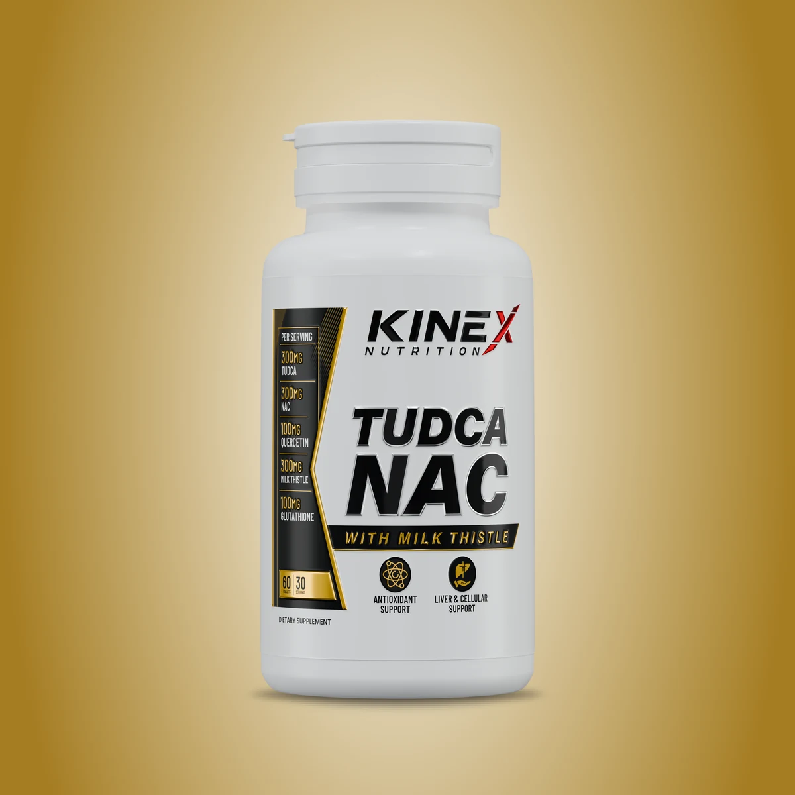

Kinex TUDCA + NAC
Clinical-strength liver protection, cellular detoxification, and bile acid optimization matrix powered by 300mg TUDCA, 300mg NAC, Milk Thistle extract, and Glutathione.
Cellular Protection For Hard-Training Athletes
Kinex TUDCA + NAC with Milk Thistle is an advanced daily wellness formula designed to provide comprehensive antioxidant and cellular support. Combining TUDCA, NAC, Milk Thistle Extract, SAMe, Glutathione, Curcumin, Quercetin, Dandelion Root, and Artichoke Extract, this carefully developed blend brings together complementary nutrients traditionally used to support liver function and the body’s natural detoxification and antioxidant defenses.
Vitamin C, Vitamin E, and Selenium provide additional antioxidant support, while TMG complements the formula with nutritional support for healthy methylation pathways.
Official Supplement Facts
Serving Size: 2 Tablets • Servings Per Container: 30
| Active Ingredient | Amount Per Serving (2 Tablets) | % DV* |
|---|---|---|
| TUDCA (Tauroursodeoxycholic Acid) | 300 mg | † |
| NAC (N-Acetyl-L-Cysteine) | 300 mg | † |
| Milk Thistle Extract (Silybum marianum) | 280 mg – 300 mg | † |
| Dandelion Root Extract | 200 mg | † |
| Vitamin C | 100 mg | 111% |
| SAMe (S-Adenosyl-L-Methionine) | 100 mg | † |
| Quercetin | 100 mg | † |
| Curcumin (from Turmeric Root) | 100 mg | † |
| Glutathione (Master Antioxidant) | 100 mg | † |
| Vitamin E | 20 mg | 133% |
| Artichoke Extract (Cynara scolymus) | 50 mg | † |
| TMG (Trimethylglycine) | 50 mg | † |
| Selenium (as Selenomethionine) | 30 mcg | 55% |
*Percent Daily Values are based on a 2,000 calorie diet. †Daily Value not established.
Tablet Formulation Excipients:
Microcrystalline Cellulose, Croscarmellose Sodium, Magnesium Stearate, Stearic Acid, and Hydroxypropyl Methylcellulose. Formulated without unnecessary dyes or fillers.
Morning Dose
Take 1 tablet in the morning, preferably after breakfast with water.
Evening Dose
Take 1 tablet in the evening after dinner with water.
Hydration
Maintain ample daily water intake (3–4 liters) to support natural hepatic filtration and bile flow.
Corporate Origin & Label Verification
Manufactured By: Kinex Nutrition
Address: B 1350, Orleans St, Floor 8, Chicago, IL 60654 USA
Website: www.kinexnutrition.com
Customer Inquiries: info@kinexnutrition.com